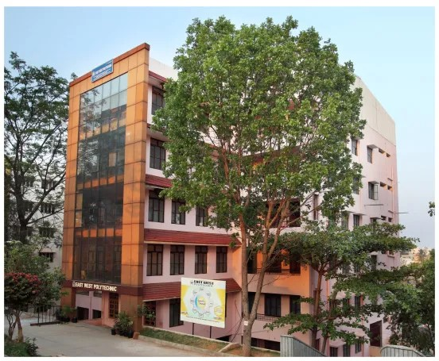

Welcome to East West Polytechnic
East West Polytechnic, recognized by the Government of Karnataka, affiliated to the Department of Technical Education, Karnataka, and approved by AICTE, New Delhi, is a proud member of ISTE. Established in 2008, EWP is dedicated to providing high-quality technical education. Our campus is strategically located in the green city of Bengaluru and spans 20 acres, offering a serene and conducive learning environment.
East West Polytechnic, Anjananagar, Bengaluru, has always emphasized discipline and character building among its students. We take pride in providing a strong foundation for holistic education, ensuring our students are well-prepared for their future endeavors.
Key Features
- Well-Equipped Laboratories: State-of-the-art laboratories for Computer Science, Electronics & Communication, Electrical & Electronics, Mechanical, and Civil Engineering.
- Full-Stacked Library: A comprehensive resource center with a vast collection of books, journals, and online resources.
- Sports Facilities: Indoor and outdoor facilities for various sports like table tennis, badminton, carom, chess, basketball, cricket, and more.
- Seminar Hall & Auditorium: Modern facilities for conducting seminars, workshops, and cultural events.
- Hostel Facilities: Comfortable and hygienic on-campus hostels for both boys and girls.
- Transport Facility: Safe and convenient transportation services with a fleet of buses.
